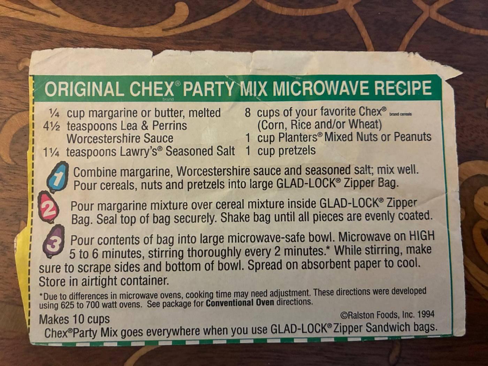

Snacks
Original Chex Party Mix
From the kitchen of Mom
MicrowaveHigh
Cook5–6 min
Makes10 cups

Mom's original card · tap to enlarge
Ingredients
Method tap a step to mark it done
- Mix the melted butter, Worcestershire sauce and seasoned salt.
- Put the cereal, nuts and pretzels in a large zipper bag. Pour the butter mixture over them, seal the bag and shake until everything is evenly coated.
- Tip into a large microwave-safe bowl. Microwave on High for 5–6 minutes, stirring well every 2 minutes and scraping the sides and bottom of the bowl. (These times were written for 625–700 watt microwaves, so start checking sooner in a stronger one.)
- Spread on paper towels to cool. Store in an airtight container.